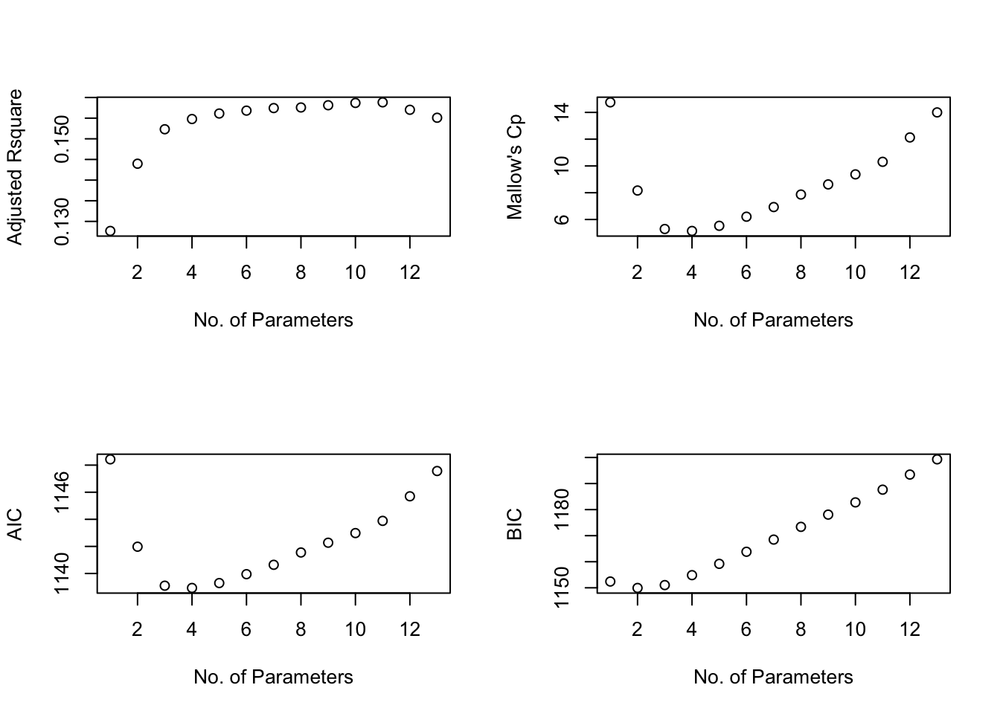
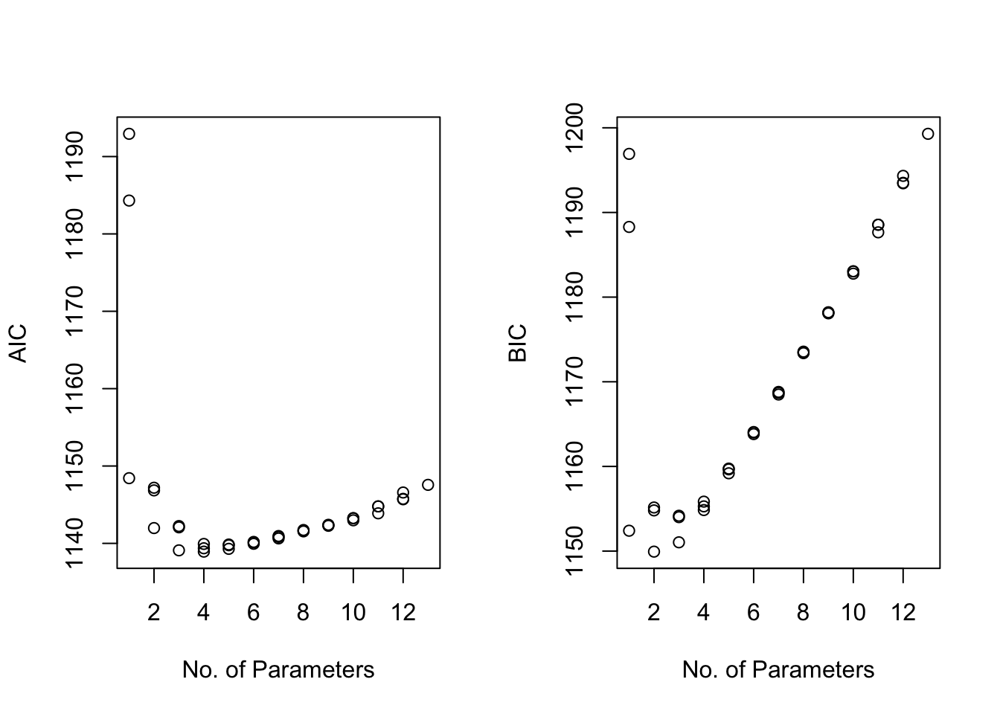
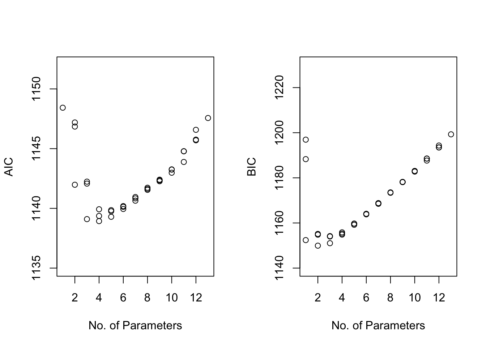

3.4 The Student Performance Example
The student-mat.csv data set contains data from a study on student achievement in secondary education of two Portuguese schools. The data are based on the following publication:
“Using data mining to predict secondary school student performance” By P. Cortez, A. M. G. Silva. 2008. Published in Proceedings of 5th Annual Future Business Technology Conference.
and can be found in the UCI data repository: here
The variables in the data set are the following:
schoolStudent’s school (binary:GP- Gabriel Pereira orMS- Mousinho da Silveira)sexSex student’s sex (binary:F- female orM- male)ageStudent’s age (numeric: from 15 to 22)addressStudent’s home address type (binary:U- urban orR- rural)famsizeFamily size (binary:LE3- less or equal to 3 orGT3- greater than 3)PstatusParent’s cohabitation status (binary:T- living together orA- apart)MeduΜother’s education level (numeric:0- none,1- primary education (4th grade),2- 5th to 9th grade,3- secondary education or4- higher education)FeduFather’s education level (numeric:0- none,1- primary education (4th grade),25th to 9th grade,3- secondary education or4higher education)MjobMother’s occupation (nominal:teacher,healthcarerelated,civil services(e.g. administrative or police),at_homeorother)FjobFather’s occupation (nominal:teacher,healthcarerelated,civil services(e.g. administrative or police),at_homeorother)reasonReason to choose this school (nominal: close tohome, schoolreputation,coursepreference orother)guardianStudent’s guardian (nominal:mother,fatherorother)traveltimeHome to school travel time (numeric:1- <15 min.,2- 15 to 30 min.,3- 30 min. to 1 hour, or4- >1 hour)studytimeWeekly study time (numeric:1- <2 hours,2- 2 to 5 hours,3- 5 to 10 hours, or4- >10 hours)failuresNumber of past class failures (numeric:nif 1<=n<3, else4)schoolsupExtra educational support (binary:yesorno)famsupFamily educational support (binary:yesorno)paidExtra paid classes within the course subject (Math or Portuguese) (binary:yesorno)activitiesExtra-curricular activities (binary:yesorno)nurseryAttended nursery school (binary:yesorno)higherWants to take higher education (binary:yesorno)
internetInternet access at home (binary:yesorno)
romanticWith a romantic relationship (binary:yesorno)
famrelQuality of family relationships (numeric: from1- very bad to5- excellent)freetimeFree time after school (numeric: from1- very low to5- very high)
gooutGoing out with friends (numeric: from1- very low to5- very high)
DalcWorkday alcohol consumption (numeric: from1- very low to5- very high)WalcWeekend alcohol consumption (numeric: from1- very low to5- very high)healthCurrent health status (numeric: from1- very bad to5- very good)
absencesNumber of school absences (numeric: from0to93)
G1First period grade (numeric: from0to20)G2Second period grade (numeric: from0to20)G3Final grade (numeric: from0to20, output target)
In our example, we want to focus on predicting the final grade (column G3) using penalized regression methods. A special variation of penalized regression is required when using categorical variables (e.g. group lasso), thus in this example we only focus on numerical predictors.
## Remove categorical predictors
stu_performance = stu_performance0[,-c(1,2,4,5,6,9,10, 11, 12, 16, 17, 18, 19, 20, 21, 22, 23,31, 32)]
## Rename the response to "Grades"
names(stu_performance)[14] = 'Grades'
head(stu_performance)## age Medu Fedu traveltime studytime failures famrel freetime goout Dalc Walc
## 1 18 4 4 2 2 0 4 3 4 1 1
## 2 17 1 1 1 2 0 5 3 3 1 1
## 3 15 1 1 1 2 3 4 3 2 2 3
## 4 15 4 2 1 3 0 3 2 2 1 1
## 5 16 3 3 1 2 0 4 3 2 1 2
## 6 16 4 3 1 2 0 5 4 2 1 2
## health absences Grades
## 1 3 6 6
## 2 3 4 6
## 3 3 10 10
## 4 5 2 15
## 5 5 4 10
## 6 5 10 15n = dim(stu_performance)[1] ## sample size
p = dim(stu_performance)[2] - 1 ## number of non-intercept predictorsWe start by fitting the full linear model including all the predictors:
##
## Call:
## lm(formula = Grades ~ ., data = stu_performance)
##
## Residuals:
## Min 1Q Median 3Q Max
## -12.2769 -2.1753 0.4053 2.7927 8.7122
##
## Coefficients:
## Estimate Std. Error t value Pr(>|t|)
## (Intercept) 13.53702 3.33724 4.056 6.05e-05 ***
## age -0.25623 0.17880 -1.433 0.15268
## Medu 0.58494 0.25650 2.280 0.02313 *
## Fedu -0.09135 0.25465 -0.359 0.72000
## traveltime -0.40184 0.31439 -1.278 0.20197
## studytime 0.26583 0.26903 0.988 0.32373
## failures -1.83146 0.31201 -5.870 9.49e-09 ***
## famrel 0.28018 0.24537 1.142 0.25422
## freetime 0.34139 0.23096 1.478 0.14021
## goout -0.62638 0.22179 -2.824 0.00499 **
## Dalc -0.13723 0.32034 -0.428 0.66862
## Walc 0.35312 0.23834 1.482 0.13928
## health -0.17429 0.15620 -1.116 0.26521
## absences 0.03197 0.02760 1.158 0.24745
## ---
## Signif. codes: 0 '***' 0.001 '**' 0.01 '*' 0.05 '.' 0.1 ' ' 1
##
## Residual standard error: 4.211 on 381 degrees of freedom
## Multiple R-squared: 0.183, Adjusted R-squared: 0.1551
## F-statistic: 6.564 on 13 and 381 DF, p-value: 2.525e-11We may want to do model selection using the testing approach (either via a backward/forward selection) removing or adding one variable at a time, or we can even compare the full model with a reduced containing only the variables that seem to be statistically significant:
performance.red = lm(Grades ~ failures + goout + Medu, data=stu_performance)
## Model comparison based on a partial F test
anova(performance.red, performance.full)## Analysis of Variance Table
##
## Model 1: Grades ~ failures + goout + Medu
## Model 2: Grades ~ age + Medu + Fedu + traveltime + studytime + failures +
## famrel + freetime + goout + Dalc + Walc + health + absences
## Res.Df RSS Df Sum of Sq F Pr(>F)
## 1 391 6956.9
## 2 381 6756.7 10 200.22 1.129 0.339
In this case, we fail to reject the null so the reduced model is preferred. However, this approach is not efficient nor optimal. Therefore, we use algorithms to search the space of models and a penalty to penalize the inclusion of terms that are not as useful.
3.4.0.1 Subset Selection via Level-wise algorithms & the leaps package
library(leaps)
regsubsets_model = regsubsets(Grades~ ., data=stu_performance, nvmax = p)
rs = summary(regsubsets_model)
The rs object above contains all the different criteria for all the models that have been evaluated. The default maximum size of models is 8 and this is changed above with the nvmax option to \(p=13\).
Below we extract the \(R^2\), Adjusted \(R^2\), \(AIC\), \(BIC\) and \(C_p\)-Mallows criteria for the 13 models that have been evaluated:
## [1] 0.1298989 0.1483134 0.1587670 0.1633698 0.1668323 0.1696634 0.1724079
## [8] 0.1746913 0.1773575 0.1800384 0.1823149 0.1827012 0.1829771The best model is the 13th model (as expected).
## [1] 0.1276849 0.1439681 0.1523125 0.1547890 0.1561232 0.1568231 0.1574385
## [8] 0.1575865 0.1581269 0.1586853 0.1588305 0.1570269 0.1550997The best model is the 11th model.
## [1] 14.751803 8.164618 5.289832 5.143431 5.528772 6.208548 6.928720
## [8] 7.863899 8.620578 9.370388 10.308796 12.128682 14.000000The best model is the 4th model.
## [1] -43.004859 -45.475340 -44.374670 -40.562949 -36.222213 -31.587827 -26.916684
## [8] -22.029154 -17.328400 -12.638892 -7.758187 -1.965927 3.879571The best model is the 2nd model.
If we want to identify which variables are included in each model, then we use the rs$which command, where the rows correspond to the model and the columns to the variable. TRUE means that the variable is included in the model and FALSE means otherwise.
## (Intercept) age Medu Fedu traveltime studytime failures famrel freetime
## 1 TRUE FALSE FALSE FALSE FALSE FALSE TRUE FALSE FALSE
## 2 TRUE FALSE TRUE FALSE FALSE FALSE TRUE FALSE FALSE
## 3 TRUE FALSE TRUE FALSE FALSE FALSE TRUE FALSE FALSE
## 4 TRUE FALSE TRUE FALSE FALSE FALSE TRUE FALSE TRUE
## 5 TRUE FALSE TRUE FALSE TRUE FALSE TRUE FALSE TRUE
## 6 TRUE FALSE TRUE FALSE TRUE FALSE TRUE FALSE TRUE
## 7 TRUE TRUE TRUE FALSE TRUE FALSE TRUE FALSE TRUE
## 8 TRUE TRUE TRUE FALSE TRUE FALSE TRUE FALSE TRUE
## 9 TRUE TRUE TRUE FALSE TRUE FALSE TRUE TRUE TRUE
## 10 TRUE TRUE TRUE FALSE TRUE FALSE TRUE TRUE TRUE
## 11 TRUE TRUE TRUE FALSE TRUE TRUE TRUE TRUE TRUE
## 12 TRUE TRUE TRUE FALSE TRUE TRUE TRUE TRUE TRUE
## 13 TRUE TRUE TRUE TRUE TRUE TRUE TRUE TRUE TRUE
## goout Dalc Walc health absences
## 1 FALSE FALSE FALSE FALSE FALSE
## 2 FALSE FALSE FALSE FALSE FALSE
## 3 TRUE FALSE FALSE FALSE FALSE
## 4 TRUE FALSE FALSE FALSE FALSE
## 5 TRUE FALSE FALSE FALSE FALSE
## 6 TRUE FALSE TRUE FALSE FALSE
## 7 TRUE FALSE FALSE FALSE TRUE
## 8 TRUE FALSE TRUE FALSE TRUE
## 9 TRUE FALSE TRUE TRUE FALSE
## 10 TRUE FALSE TRUE TRUE TRUE
## 11 TRUE FALSE TRUE TRUE TRUE
## 12 TRUE TRUE TRUE TRUE TRUE
## 13 TRUE TRUE TRUE TRUE TRUEFor example, Model 1 only contains failures, and the intercept.
Next, compute “by hand” the AIC/BIC for those \(p\) models and find the one that achieves the the smallest score:
msize = 1:p;
par(mfrow=c(1,2))
Aic = n*log(rs$rss/n) + 2*msize;
Bic = n*log(rs$rss/n) + msize*log(n);## [1] 1148.427 1141.978 1139.100 1138.932 1139.294 1139.950 1140.642 1141.551
## [9] 1142.272 1142.983 1143.885 1145.698 1147.565AIC chooses the 4th model.
## [1] 1152.406 1149.936 1151.036 1154.848 1159.189 1163.823 1168.494 1173.382
## [9] 1178.082 1182.772 1187.653 1193.445 1199.290As we saw before, BIC selects the 2nd model.
We can also plot the results for the various models. So, we have
par(mfrow=c(2,2))
plot(msize, rs$adjr2, xlab="No. of Parameters", ylab = "Adjusted Rsquare");
plot(msize, rs$cp, xlab="No. of Parameters", ylab = "Mallow's Cp");
plot(msize, Aic, xlab="No. of Parameters", ylab = "AIC")
plot(msize, Bic, xlab="No. of Parameters", ylab = "BIC")
For this particular data set, AIC and BIC end up selecting different models. The model selected by AIC is larger than the one selected by BIC, which is common. AIC favors larger models while BIC favors smaller models. Although the model selected by BIC does not have the smallest AIC score, its AIC score is very close to the smallest one.
## [,1] [,2]
## (Intercept) TRUE TRUE
## age FALSE FALSE
## Medu TRUE TRUE
## Fedu FALSE FALSE
## traveltime FALSE FALSE
## studytime FALSE FALSE
## failures TRUE TRUE
## famrel FALSE FALSE
## freetime TRUE FALSE
## goout TRUE FALSE
## Dalc FALSE FALSE
## Walc FALSE FALSE
## health FALSE FALSE
## absences FALSE FALSEleaps does not return AIC, but BIC. Its BIC differs from what has been computed above, but the difference is a constant, so the two BIC formulas (ours and the one used by leaps) are essentially the same.
## Bic
## [1,] -43.004859 1152.406 -1195.411
## [2,] -45.475340 1149.936 -1195.411
## [3,] -44.374670 1151.036 -1195.411
## [4,] -40.562949 1154.848 -1195.411
## [5,] -36.222213 1159.189 -1195.411
## [6,] -31.587827 1163.823 -1195.411
## [7,] -26.916684 1168.494 -1195.411
## [8,] -22.029154 1173.382 -1195.411
## [9,] -17.328400 1178.082 -1195.411
## [10,] -12.638892 1182.772 -1195.411
## [11,] -7.758187 1187.653 -1195.411
## [12,] -1.965927 1193.445 -1195.411
## [13,] 3.879571 1199.290 -1195.411What are the 2nd and 3rd best models in terms of AIC/BIC?
This cannot be answered by looking at the AIC/BIC plots shown above. Instead, we need to run the following code.
regsubsets_model.1 = regsubsets(Grades ~ ., data=stu_performance, nbest = 3, nvmax = p)
rs.1 = summary(regsubsets_model.1)
#rs.1$which
msize.1 = apply(rs.1$which, 1, sum) - 1par(mfrow=c(1,2))
Aic.1 = n*log(rs.1$rss/n) + 2*msize.1
Bic.1 = n*log(rs.1$rss/n) + msize.1*log(n)
plot(msize.1, Aic.1, xlab="No. of Parameters", ylab = "AIC")
plot(msize.1, Bic.1, xlab="No. of Parameters", ylab = "BIC")
par(mfrow=c(1,2))
plot(msize.1, Aic.1, ylim = c(1135, 1152), xlab="No. of Parameters", ylab = "AIC")
plot(msize.1, Bic.1, ylim = c(1140, 1230), xlab="No. of Parameters", ylab = "BIC")
## (Intercept) age Medu Fedu traveltime studytime failures famrel freetime
## 4 TRUE FALSE TRUE FALSE FALSE FALSE TRUE FALSE TRUE
## 3 TRUE FALSE TRUE FALSE FALSE FALSE TRUE FALSE FALSE
## 5 TRUE FALSE TRUE FALSE TRUE FALSE TRUE FALSE TRUE
## goout Dalc Walc health absences
## 4 TRUE FALSE FALSE FALSE FALSE
## 3 TRUE FALSE FALSE FALSE FALSE
## 5 TRUE FALSE FALSE FALSE FALSE## (Intercept) age Medu Fedu traveltime studytime failures famrel freetime
## 2 TRUE FALSE TRUE FALSE FALSE FALSE TRUE FALSE FALSE
## 3 TRUE FALSE TRUE FALSE FALSE FALSE TRUE FALSE FALSE
## 1 TRUE FALSE FALSE FALSE FALSE FALSE TRUE FALSE FALSE
## goout Dalc Walc health absences
## 2 FALSE FALSE FALSE FALSE FALSE
## 3 TRUE FALSE FALSE FALSE FALSE
## 1 FALSE FALSE FALSE FALSE FALSE3.4.0.2 Subset Selection via the step fucntion
We can use the stepwise approach to search possible models moving forward, backwards or in both directions (stepwise).
The R function to do this is the step function. The default is the stepwise method, so if we want to change this, we choose the direction option. The method by default outputs all the steps of the algorithm, so we can set trace=0 if we do not want to see the intermediate results. Also, the default criterion for model selection is the AIC. However, we can select the BIC criterion by selecting k = long(n).
## Stepwise AIC
stepAIC = step(performance.full, trace=0, direction="both")
#stepAIC = step(performance.full, direction="both")## Stepwise BIC
n = dim(stu_performance)[1]
stepBIC = step(performance.full, trace=0, direction="both", k=log(n)) If we want to retrieve the output from the step function, then we can use the following code:
sel.var.AIC = attr(stepAIC$terms, "term.labels")
sel.var.BIC = attr(stepBIC$terms, "term.labels")
sel.var.AIC## [1] "Medu" "failures" "freetime" "goout"## [1] 4## [1] 2## [1] TRUE TRUE TRUE TRUE## [1] TRUE TRUE3.4.0.3 LASSO and RIDGE Regression
glmnet is the library needed for both lasso (\(\alpha=1\)) and ridge (\(\alpha=0\)). Check more glmnet examples at https://web.stanford.edu/~hastie/glmnet/glmnet_beta.html
## Loading required package: Matrix## Loaded glmnet 4.1-10## The input in the glmnet function should be in matrix format:
X = as.matrix(stu_performance[, names(stu_performance) != "Grades"])
Y = stu_performance$GradesWe are going to split the data in training (80%) and testing (20%) data sets. Then, we will select the variables in the training set and estimate the coefficients and compute the average MSE on the testing data.
## Training/ Testing Data Sets
ntest = round(n*0.2); ## testing set sample size
ntrain = n - ntest; ## training set sample size
test.id = sample(1:n, ntest); ## sampling indices for the test data
Ytest = Y[test.id]; ## Response in the Testing data
Training the full model in the training data set:
## Fit the Full model in the training data
full.model = lm(Y[-test.id]~., data = stu_performance[-test.id, ])
We then use the full model to predict values and compute the MSE on the testing data set:
## Predicted values on the testing data set
Ytest.pred = predict(full.model, newdata= stu_performance[test.id, ]);
## Averaged MSE on the test set
sum((Ytest - Ytest.pred)^2)/ntest ## [1] 7.933741e-30